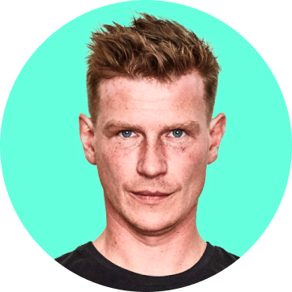

Adam Černík UX/UI Designer & Product Developer

Tap photo to see coding skillsI'm a UX & Product Designer with over 15 years of experience crafting digital experiences that balance usability, aesthetics, and business impact. Currently, I work independently, partnering with businesses to refine their digital products through strategic UX and design consulting.
I've contributed to mobile banking experience and one of Europe's first Apple Pay integrations. My career also includes impactful roles at and , where I designed digital platforms used by millions. Previously, I was Design Lead at , a Czech finance company, where I managed a small team to overhaul the banking system, develop a new app, and enhance the public website.
Earlier in my career, I collaborated with startups and enterprises, specializing in interaction design, user research, and prototyping to create intuitive, functional products.
Today, I work with select clients across Germany, Austria, and beyond, offering expertise in UX strategy, product design, and digital transformation to help businesses achieve their goals through user-centered design.
This page embodies my design philosophy: purposeful, intentional, and user-centered. I focus on creating only what's essential and communicating what truly matters. Every detail is thoughtfully crafted with your needs in mind.
Recent Activities
Updated: February 2026- My most recent project is incredibly exciting, though, unfortunately, it's under wraps due to an NDA. Stay tuned for more details once I can share them!
- I've teamed up with the talented team at Švejda Goldmann UX Studio to bring our exceptional design services to Germany and Austria.
- Always hands-on with software design, creating practical and impactful solutions.